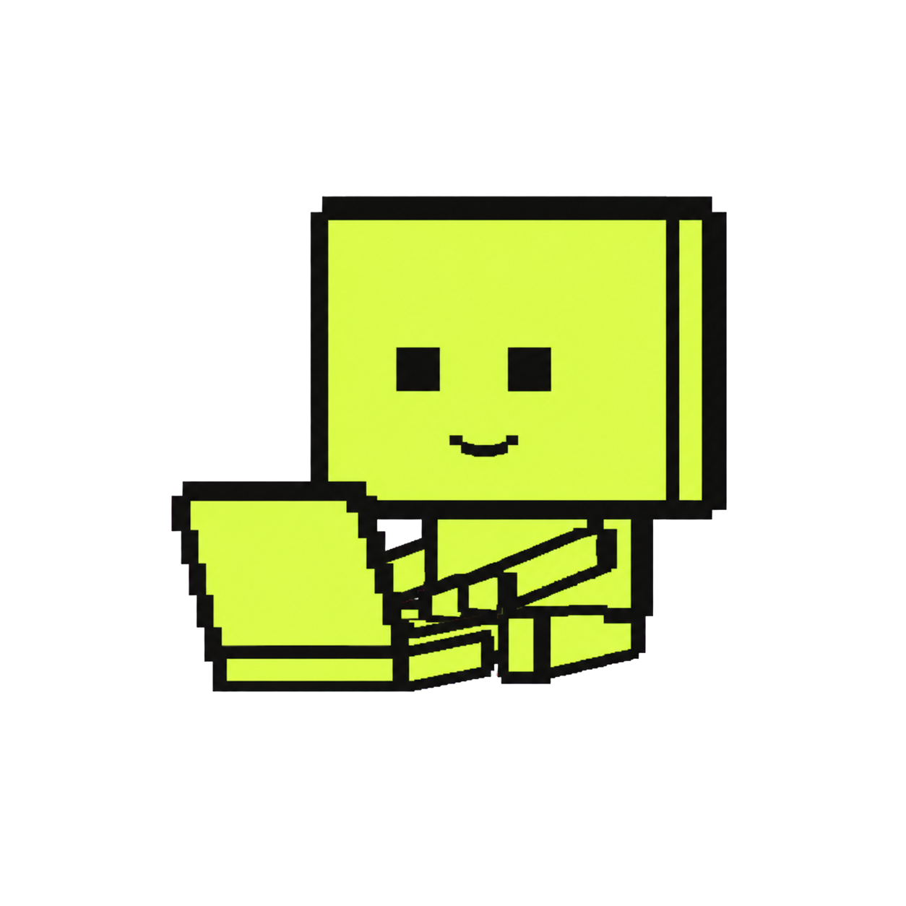
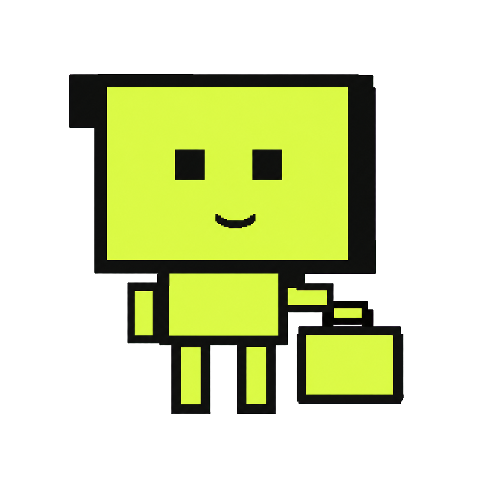
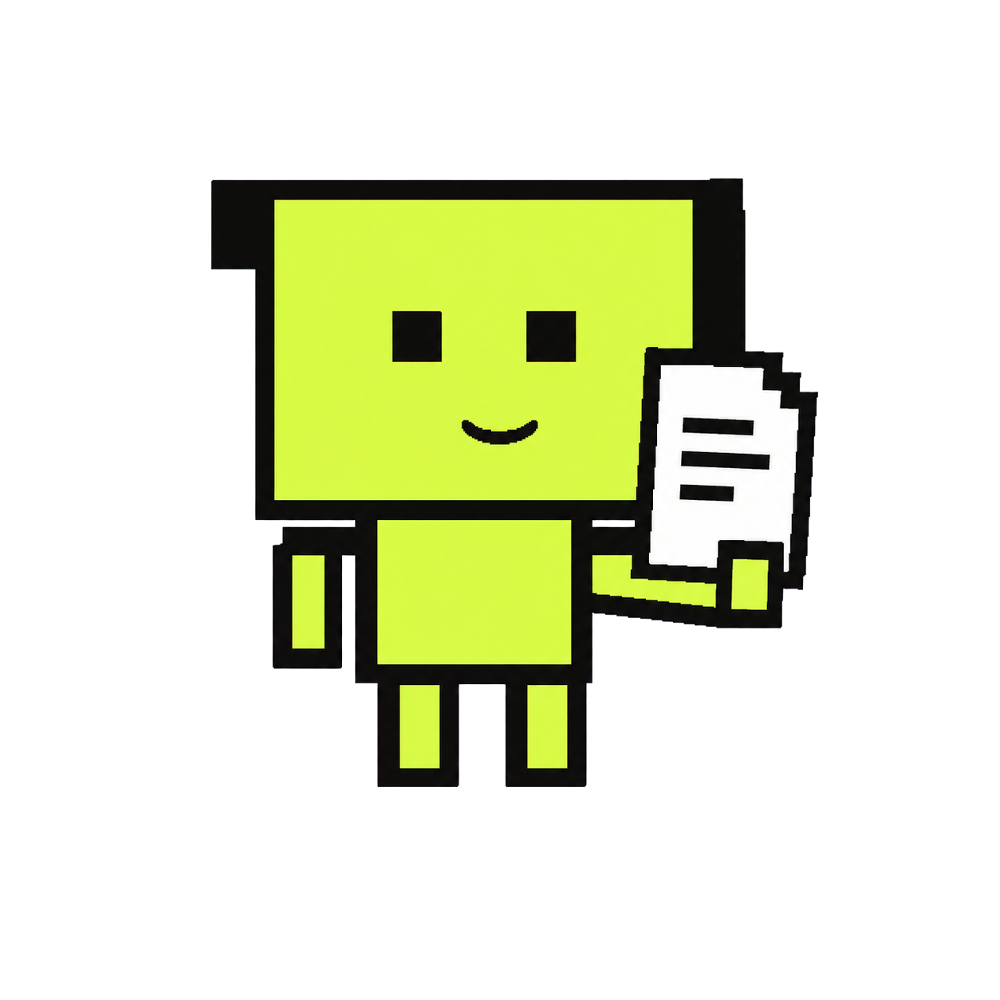
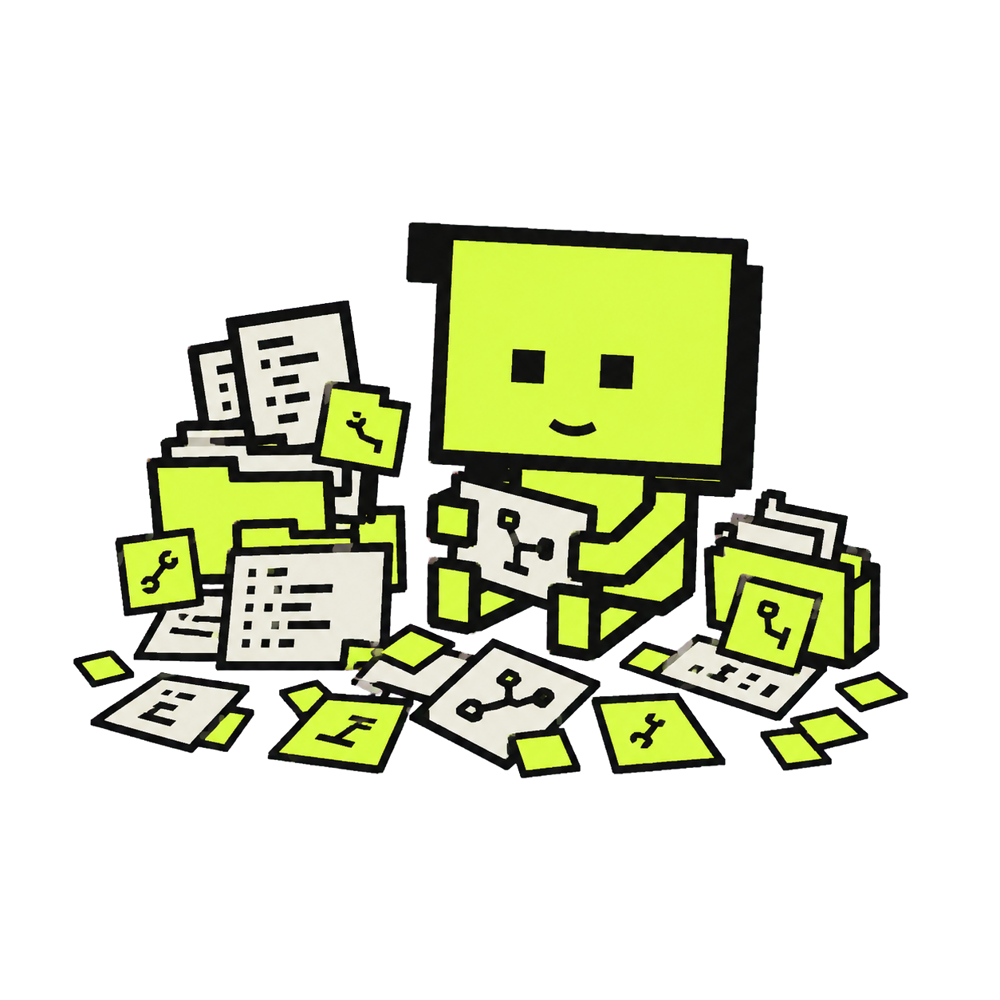

Nice, France · Remote-friendly
Nice, France · Remote-friendly
I like working on things I’m proud of.
I began in computer graphics and VR/AR research, moved into Java telecom integrations, and now work with cloud platforms and DevOps. I like making software better and feeling proud of what I put into people’s hands.
I’m writing stuff here too →
02Careerthe full path→
03CVthe full record↗
04GitHubcode & repos↗